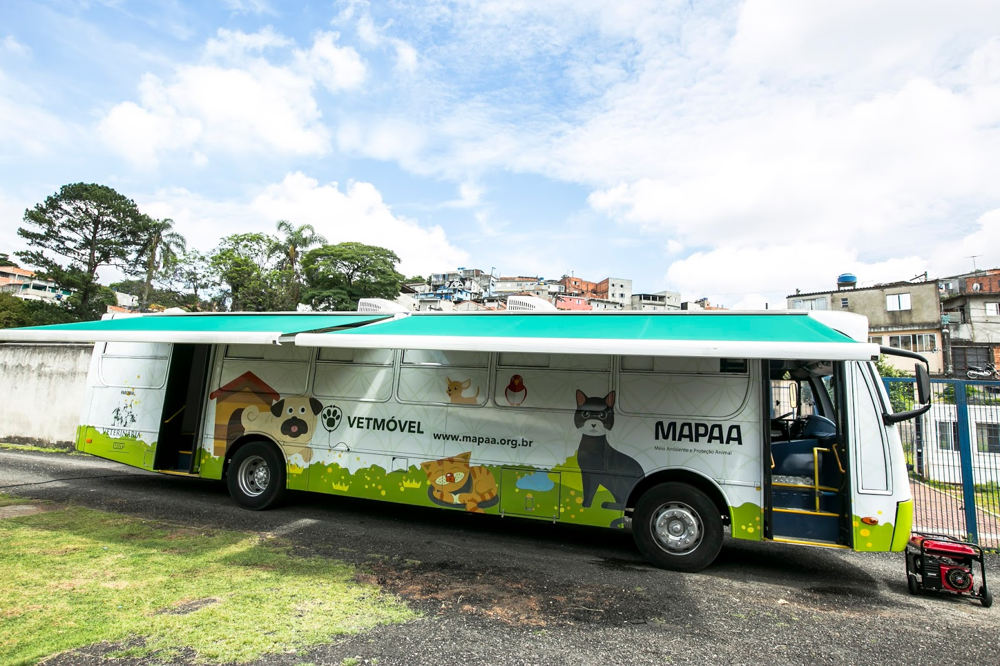
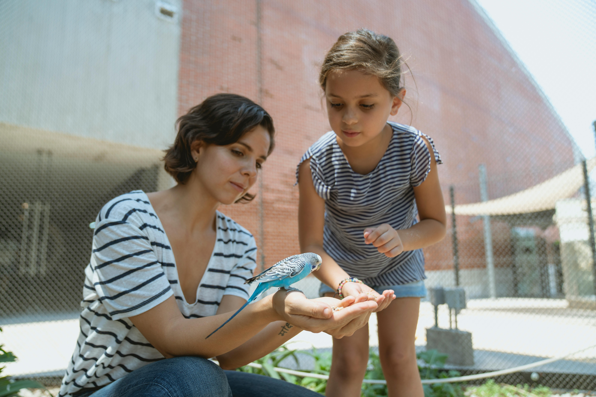

Nossos Projetos Sociais

Clínica Veterinária Móvel
Atendimento gratuito com castração e vacinação em comunidades carentes.

Educação e Conscientização
Palestras sobre posse responsável e cuidados com animais.
Como Ajudar
Você pode contribuir com doações financeiras, ração, medicamentos ou se tornando voluntário.
Seja Voluntário